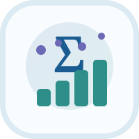

LORESTAN UNIVERSITY • DEPARTMENT OF STATISTICS
به گروه آمار دانشگاه لرستان خوش آمدید
با استفاده از کلیدهای زیر میتوانید به چارتهای درسی، سرفصلها و برنامههای آموزشی گروه دسترسی پیدا کنید.
📊 آمار و علم داده
🎓 اطلاعات آموزشی
⚡ دسترسی سریع
دسترسی سریع
اطلاعات آموزشی
راههای ارتباطی
ارتباط با گروه
⚄
۵آخرین پرتاب